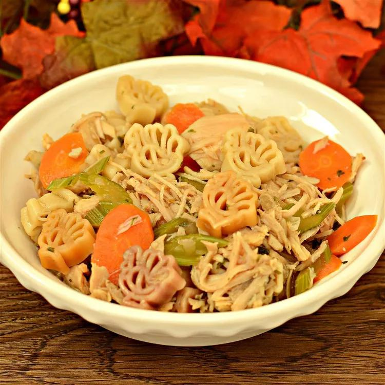

Homemade Turkey Soup

Description
This homemade turkey soup recipe comes from a number of years of playing
in the kitchen. I find that the addition of beef stock to the recipe
adds depth to a usually bland soup. Any type of pasta can be used.
Ingredients
- 1 tablespoon olive oil
- 1 ½ cups diced celery
- 1 ½ cups diced carrots
- 1 cup diced onion
- 1 tablespoon dried parsley
- 1 bay leaf
- 3 cups beef stock
- 3 cups chicken stock
- 2 cups roasted white turkey meat
- 1 teaspoon salt
- 1 teaspoon ground black pepper
- ¾ cup rotini pasta
Steps
- Heat oil in a large pot over medium heat.
- Add celery, carrots, onion, parsley, and bay leaf.
- Cook until vegetables are tender, about 10 minutes.
- Add beef stock, chicken stock, turkey, salt, and black pepper.
- Bring to a boil.
- Reduce heat, cover pot, and simmer until soup is heated through, about 15 minutes.
- Stir rotini into soup.
- Cook until pasta is tender yet firm to the bite, about 15 minutes.
Home